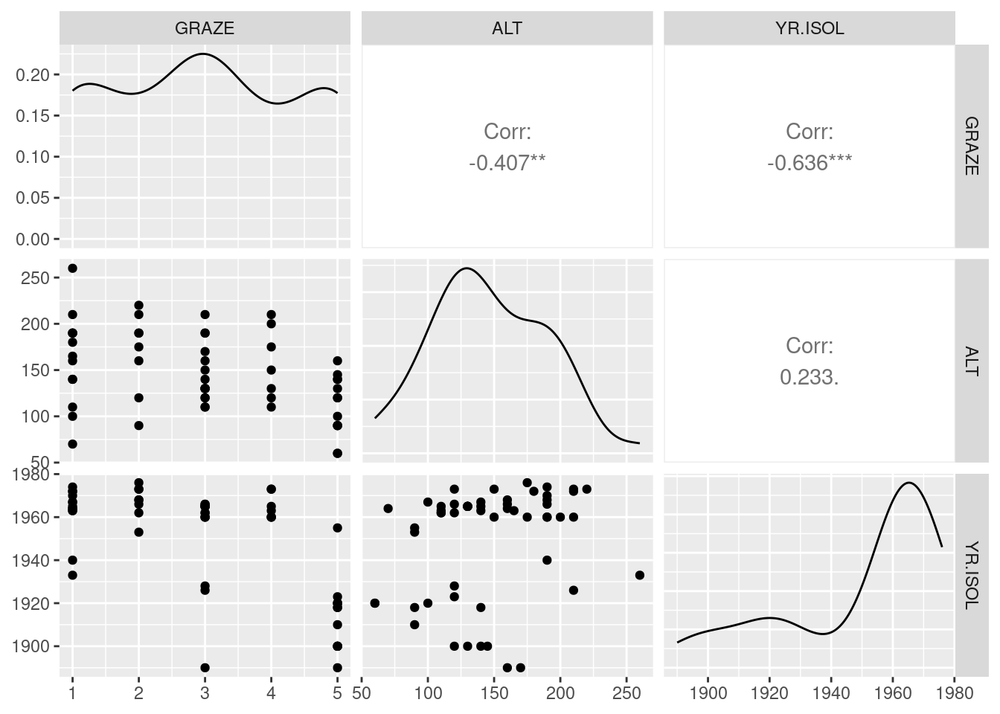
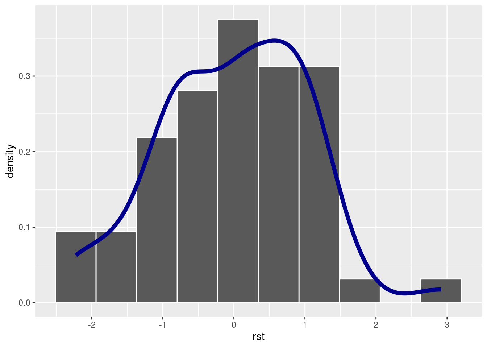
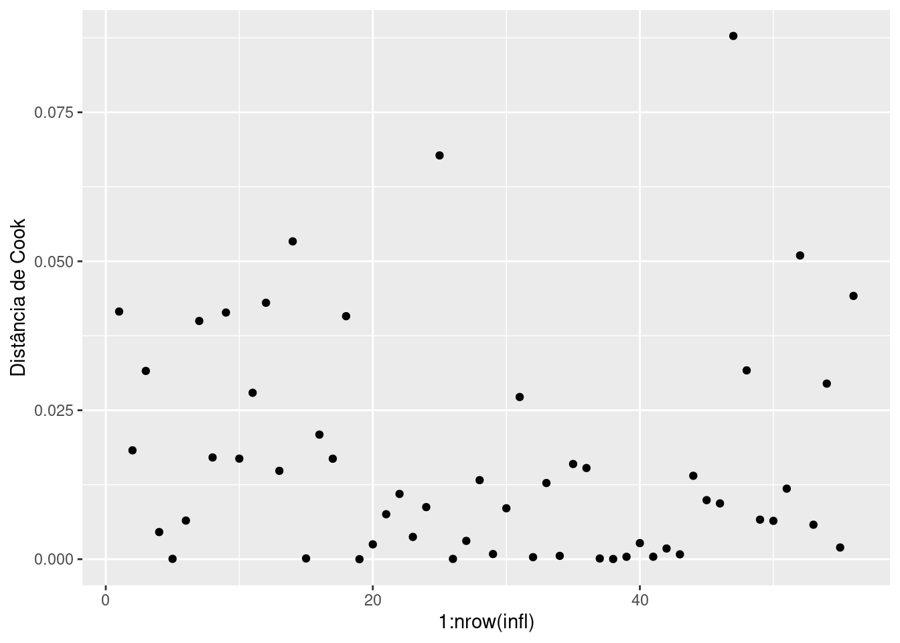
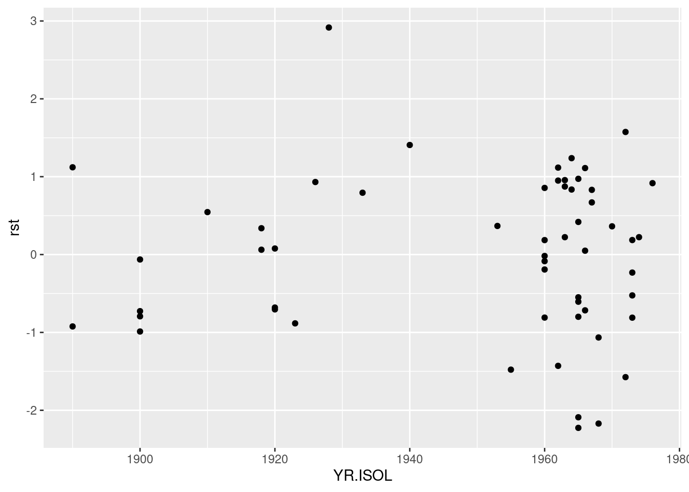
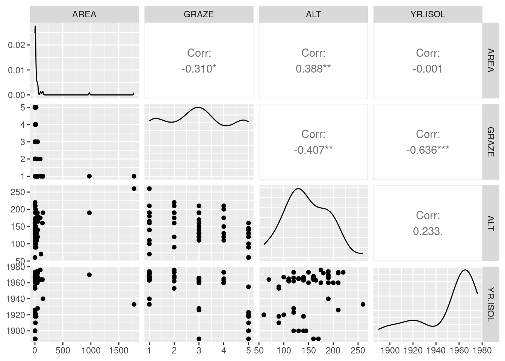

library(tidyverse)
library(GGally)
library(patchwork)
library(gt)Regressão linear múltipla
Regressão linear múltipla, discutindo seleção de variáveis, pressupostos e diagnósticos de adequação do modelo.
DicaPacotes, funções e base de dados utilizadas
1 Abundância de aves em fragmentos de floresta
Loyn (1987) conduziu um estudo para entender quais características do habitat estavam relacionadas à abundância de aves da floresta (acesse o artigo aqui). Para isso, ele selecionou 56 fragmentos de floresta no sudeste de Victoria, Austrália, e registrou a abundância de aves da floresta (ABUND) em cada fragmento como variável de resposta.
As variáveis preditoras registradas para cada fragmento incluíram:
- Área do fragmento (ha): AREA
- Distância ao fragmento mais próximo (km): DIST
- Distância ao fragmento maior mais próximo (km):LDIST
- Número de anos desde que o fragmento foi isolado por desmatamento (anos):YR.ISOL
- Índice de histórico de pastagem, de 1 (leve) a 5 (pesado):GRAZE
- Altitude média (m):ALT
Inicialmente, vamos nos concentrar nas variáveis YR.ISOL, GRAZE e ALT.
Importe a base de dados loyn.csv
loyn = read_csv("https://raw.githubusercontent.com/FCopf/datasets/refs/heads/main/loyn.csv")
head(loyn) |> gt()| ABUND | AREA | YR.ISOL | DIST | LDIST | GRAZE | ALT |
|---|---|---|---|---|---|---|
| 5.3 | 0.1 | 1968 | 39 | 39 | 2 | 160 |
| 2.0 | 0.5 | 1920 | 234 | 234 | 5 | 60 |
| 1.5 | 0.5 | 1900 | 104 | 311 | 5 | 140 |
| 17.1 | 1.0 | 1966 | 66 | 66 | 3 | 160 |
| 13.8 | 1.0 | 1918 | 246 | 246 | 5 | 140 |
| 14.1 | 1.0 | 1965 | 234 | 285 | 3 | 130 |
2 Gráficos de dispersão entre ABUND e cada uma das demais variáveis preditoras
plt_gr <- ggplot(loyn) +
aes(y = ABUND, x = GRAZE) +
geom_point() +
geom_smooth(se = FALSE, span = 1)
plt_al <- ggplot(loyn) +
aes(y = ABUND, x = ALT) +
geom_point() +
geom_smooth(se = FALSE, span = 1)
plt_yr <- ggplot(loyn) +
aes(y = ABUND, x = YR.ISOL) +
geom_point() +
geom_smooth(se = FALSE, span = 1)plt_gr + plt_al + plt_yr
3 Multicolinearidade: as variáveis preditoras são correlacionadas entre si?
ggpairs(loyn |> select(GRAZE, ALT, YR.ISOL))
As variáveis ALT versus GRAZE e GRAZE versus YR.ISOL parecem ter um grau de correlação moderado entre si.
4 O modelo de regressão múltipla
O modelo de regressão linear múltipla é dado por:
\[ABUND_i = \beta_0 + \beta_1 ALT_i + \beta_2 YR.ISIOL_i + \epsilon_i\]
No R pode ser ajustado por:
mfull <- lm(ABUND ~ ALT + YR.ISOL, data = loyn)
mfull
Call:
lm(formula = ABUND ~ ALT + YR.ISOL, data = loyn)
Coefficients:
(Intercept) ALT YR.ISOL
-348.47698 0.07006 0.18348 O resumo do modelo pode ser visto com a função summary
summary(mfull)
Call:
lm(formula = ABUND ~ ALT + YR.ISOL, data = loyn)
Residuals:
Min 1Q Median 3Q Max
-18.9745 -6.4690 0.6168 7.4408 24.0155
Coefficients:
Estimate Std. Error t value Pr(>|t|)
(Intercept) -348.47698 93.73407 -3.718 0.000486 ***
ALT 0.07006 0.02852 2.457 0.017329 *
YR.ISOL 0.18348 0.04852 3.781 0.000398 ***
---
Signif. codes: 0 '***' 0.001 '**' 0.01 '*' 0.05 '.' 0.1 ' ' 1
Residual standard error: 8.953 on 53 degrees of freedom
Multiple R-squared: 0.3297, Adjusted R-squared: 0.3044
F-statistic: 13.03 on 2 and 53 DF, p-value: 2.49e-055 Hipótese nula e comparação de modelos
A hipótese nula (\(H_0\)) básica que podemos testar ao ajustar um modelo de regressão linear múltipla é que todas as inclinações de regressão parciais são iguais a zero, ou seja, \(H_0: \beta_1 = \beta_2 = \cdots = \beta_j = 0\). Neste exemplo, \(H_0\) é que o coeficiente de inclinação dos níveis de pastagem e os anos de isolamento do fragmento sejam ambos iguais a zero e, consequentemente, não têm influência sobre a abundância.
Testamos a hipótese nula com a ANOVA na regressão múltipla, que divide a variação total de \(Y\) em dois componentes: a variação explicada pela regressão linear com \(X_1\), \(X_2\), \(\cdots\), \(X_j\) e a variação residual.
Se \(H_0\) for verdadeira, tanto o quadrado médio da regressão \(QM_{Regressão}\) quanto o quadrado médio do resíduo (\(QM_{Resíduo}\)) estimarão \(\sigma^2\), e a razão \(F\) entre eles será igual a 1. Se \(H_0\) for falsa, pelo menos uma das inclinações de regressão parciais não será igual a zero e \(QM_{Regressão}\) estimará \(\sigma^2\) mais um termo \(QM_{Regressão}\) o que representa essas inclinações de regressão parciais. Portanto, a razão \(F = \frac{QM_{Regressão}}{QM_{Regressão}} > 1\). Neste caso, a decisão de aceitar \(H_0\) é feita pela comparação do \(F\) calculado com a distribuição \(F\) apropriada, da mesma forma que fazemos com a regressão linear simples ou com a Análise de Variância.
O resultado da razão \(F\) aparece no comando summary, que no exemplo acima é F = 13.035, com valor de p = 2.5^{-5}.
Também podemos testar as hipóteses nulas sobre cada coeficiente de regressão parcial, ou seja, de que qualquer \(\beta_1\) seja igual a zero. Para isto, podemos usar a estratégia de comparação de modelos em que o modelo completo (aquele com todas as variáveis) é comparado com o modelo reduzido (aquele sem a variável \(X_1\) de interesse).
Para testar o efeito da altitude, por exemplo, o modelo reduzido é:
\(ABUND_i = \beta_0 + \beta_2 YR.ISIOL_i + \epsilon_i\)
O modelo completo tem soma dos quadrados (\(SQ\)) maior que o modelo reduzido. Para comparar o ganho extra que o modelo completo tem sobre o modelo reduzido podemos fazer:
\(SS_{extra} = SS_{Regressão_{completo}} - SS_{Regressão_{reduzido}}\)
Em seguida, calculamos o quadrado médio extra como \(QM_{extra} = \frac{SS_{extra}}{gl}\) e usamos o teste \(F\) como:
\(F = \frac{QM_{extra}}{QM_{Resíduo_{completo}}}\)
O mesmo pode ser feito para a variável \(YR.ISOL\).
No R, podemos testar os efeitos dos coeficientes parciais de regressão com o comando drop1.
drop1(mfull, test = 'F')Single term deletions
Model:
ABUND ~ ALT + YR.ISOL
Df Sum of Sq RSS AIC F value Pr(>F)
<none> 4248.3 248.42
ALT 1 483.79 4732.1 252.46 6.0355 0.0173292 *
YR.ISOL 1 1146.10 5394.4 259.80 14.2982 0.0003979 ***
---
Signif. codes: 0 '***' 0.001 '**' 0.01 '*' 0.05 '.' 0.1 ' ' 1Vemos aqui que os dois componentes (ALT e YR.ISOL) adicionam uma variação explicada significativa, isto é, para os dois coeficientes \(p \le 0,005\).
Note que o teste o teste F de comparação de modelos foi equivalente ao teste \(t\) aplicado a cada coeficiente e que pode ser visto no resultado da função summary, sendo \(F = t^2\). No entanto, a estratégia de comparação de modelos apresentada aqui permite a comparação não somente de coeficientes isolados, mas de qualquer combinação específica dos coeficientes em comparação com o modelo completo.
6 Coeficiente de determinação (\(R^2\))
Na regressão múltipla, o coeficiente de determinação \(R^2\) mede a proporção da variabilidade total da variável resposta que é explicada pelas variáveis preditoras. No entanto, \(R^2\) tende a aumentar à medida que mais preditores são adicionados ao modelo, mesmo que não sejam significativos. Para corrigir essa inflação, utilizamos o coeficiente de determinação ajustado (\(R^2_{ajustado}\)), que ajusta o \(R^2\) considerando o número de preditores no modelo e o tamanho da amostra. O \(R^2_{ajustado}\) penaliza a adição de preditores irrelevantes, proporcionando uma avaliação mais precisa da qualidade do ajuste do modelo e pode ser obtido pela expressão:
\(R^2_{ajustado} = 1 - \frac{(1-R^2)(n-1)}{n-k-1}\)
No resultado da função summary vemos que o \(R^2 = 0.33\) e o \(R^2_{ajustado} = 0.304\).
7 Pressupostos da regressão linear múltipla
7.1 Normalidade dos resíduos
loyn <- loyn |>
mutate(rst = rstudent(mfull),
yaj = fitted(mfull))ggplot(loyn) +
aes(x = rst, y = after_stat(density)) +
geom_histogram(bins = 10, density = TRUE, color = 'white') +
geom_density(color = 'darkblue', linewidth = 2)
shapiro.test(loyn$rst)
Shapiro-Wilk normality test
data: loyn$rst
W = 0.97409, p-value = 0.26877.2 Gráfico de resíduos
ggplot(loyn) +
aes(x = yaj, y = rst) +
geom_point() +
geom_hline(yintercept = 0, linetype = "dashed", color = "blue")
7.3 Índice de Alavancagem (Leverage)
infl <- influence.measures(mfull)$infmat |>
as.data.frame()
ggplot(infl) +
aes(y = hat, x = 1:nrow(infl)) +
geom_point() +
ylab('Leverage')
7.4 Índice de Alavancagem de Cook (Dcook)
O índice de alavancagem de Cook é uma medida que combina a magnitude do efeito de alavancagem de uma observação com o quanto essa observação influencia a estimativa dos coeficientes de regressão. Uma observação com \(D_{Cook} > 1\) é frequentemente considerada influente e devem ser examinada para avaliar seu impacto no modelo.
Para obter o índice de alavancagem de Cook em R:
ggplot(infl) +
aes(y = cook.d, x = 1:nrow(infl)) +
geom_point() +
ylab('Distância de Cook')
8 Outros dignósticos
8.1 Resíduos versus variáveis preditoras
ggplot(loyn) +
aes(x = ALT, y = rst) +
geom_point()
ggplot(loyn) +
aes(x = YR.ISOL, y = rst) +
geom_point()
8.2 Resíduos dos modelos reduzidos versus variáveis preditoras
Neste gráficos, ajustamos os modelos reduzidos excluindo uma variável preditora por vez e plotamos os resíduos deste modelo com a variável preditora excluída. Uma tendência neste gráfico indica que a inclusão da variável no modelo ajudaria a reduzir a variação residual.
mpalt <- lm(ABUND ~ YR.ISOL, data = loyn) # Modelo reduzido sem ALT
plot(rstudent(mpalt) ~ loyn$ALT)
abline(lm(rstudent(mpalt) ~ loyn$ALT))
mpisol <- lm(ABUND ~ ALT, data = loyn) # Modelo reduzido sem YR.ISOL
plot(rstudent(mpisol) ~ loyn$YR.ISOL)
abline(lm(rstudent(mpisol) ~ loyn$YR.ISOL))
9 Mais sobre multicolinearidade
Variáveis preditoras correlacionadas entre si caracteriza a multicolinearidade. Quando severa, a multicolinearidade pode afetar a estimativa dos parâmetros da regressão, pois pequenas alterações nos dados ou inclusão/remoção de variáveis podem causar grandes mudanças nos coeficientes estimados da regressão. Além disso, a presença de multicolinearidade pode inflar os erros padrões dos coeficientes de regressão, resultando em um modelo globalmente significativo, mas com coeficientes individuais que não são estatisticamente diferentes de zero.
Avaliar uma matriz de correlação entre pares de variáveis preditoras pode ser a primeira e mais simples forma de explorar a presença de colinearidade. Outra forma é avaliar a tolerância de cada variável preditora \(X_j\) por meio de \(1 - R^2_j\), em que \(R^2_j\) é o coeficiente de determinação do modelo em que \(X_j\) é relacionada às demais \(1 - p\) variáveis preditoras. Geralmente, esta tolerância é expressa na forma do índice de inflação da variação (variance inflation factor - \(VIF\)) para cada variável preditora, em que:
\[VIF_j =\frac{1}{1 - R^2_j}\]
Valores elevados indicam que a presença de colinearidade devido a variável \(X_j\). Diferente níveis de corte são propostos como indicadores da presença de multicolinearidade \(VIF > 5\), \(VIF > 10\) ou \(VIF > 20\)
Todos os coeficientes \(VIF_j\) podem ser encontrados em uma única operação calculando a inversa da matriz de correlação, \(\mathbb{R^{1}}\) entre as variáveis de interesse. Os elementos diagonais dessa matriz inversa são os coeficientes \(VIF_j\). Vimos que GRAZE era correlacionada com ALT e com YR.ISOL. Os ceoficientes \(VIF\) para estas variáveis podem ser obtidos por:
vif <- loyn |>
select(GRAZE, ALT, YR.ISOL) |>
cor() |>
solve() |>
diag()
vif GRAZE ALT YR.ISOL
1.904799 1.200372 1.679995 O \(VIF\) para GRAZE é maior que os demais, porém longe do limite \(VIF > 5\). Vejamos entretanto o que ocorre com o modelo para abundância se inserimos estas três variáveis:
mfull2 <- lm(ABUND ~ GRAZE + ALT + YR.ISOL, data = loyn)
summary(mfull2)
Call:
lm(formula = ABUND ~ GRAZE + ALT + YR.ISOL, data = loyn)
Residuals:
Min 1Q Median 3Q Max
-19.5498 -4.8951 0.6504 4.7798 20.2384
Coefficients:
Estimate Std. Error t value Pr(>|t|)
(Intercept) -73.58185 107.24995 -0.686 0.495712
GRAZE -4.01692 0.99881 -4.022 0.000188 ***
ALT 0.03285 0.02679 1.226 0.225618
YR.ISOL 0.05143 0.05393 0.954 0.344719
---
Signif. codes: 0 '***' 0.001 '**' 0.01 '*' 0.05 '.' 0.1 ' ' 1
Residual standard error: 7.894 on 52 degrees of freedom
Multiple R-squared: 0.4887, Adjusted R-squared: 0.4592
F-statistic: 16.57 on 3 and 52 DF, p-value: 1.106e-07Note que agora, somente GRAZE aparece com coeficiente estatísticamente diferente de \(0\) e \(R^2_{ajustado}\) aumenta de 0.304 para 0.459
10 Tranformações
Transformações podem frequentemente ser eficazes se a distribuição em situações em que as variáveis preditoras apresentem distribuições assimétricas. Vamos incluir a AREA no modelo de regressão. Vejamos os graficos de disperção entre as variáveis preditoras.
ggpairs(loyn |> select(AREA, GRAZE, ALT, YR.ISOL))
Há uma relação fortemente assimétrica da variável área, em que poucos framentos são muito maiores. Vejamos as associações par a par utilizando a transfomação \(log(AREA)\)
loyn$lAREA <- log(loyn$AREA)
ggpairs(loyn |> select(lAREA, GRAZE, ALT, YR.ISOL))
A transformação resolveu o problema da assimetria.
Vamos ajustar agora o modelo de regressão:
mfull3 <- lm(ABUND ~ lAREA + GRAZE + ALT + YR.ISOL, data = loyn)
summary(mfull3)
Call:
lm(formula = ABUND ~ lAREA + GRAZE + ALT + YR.ISOL, data = loyn)
Residuals:
Min 1Q Median 3Q Max
-14.4245 -3.3341 0.6227 2.6759 15.3290
Coefficients:
Estimate Std. Error t value Pr(>|t|)
(Intercept) -141.88574 86.23728 -1.645 0.1061
lAREA 3.07303 0.55118 5.575 9.41e-07 ***
GRAZE -1.60127 0.90538 -1.769 0.0829 .
ALT 0.02586 0.02136 1.210 0.2317
YR.ISOL 0.07991 0.04323 1.848 0.0703 .
---
Signif. codes: 0 '***' 0.001 '**' 0.01 '*' 0.05 '.' 0.1 ' ' 1
Residual standard error: 6.283 on 51 degrees of freedom
Multiple R-squared: 0.6823, Adjusted R-squared: 0.6574
F-statistic: 27.39 on 4 and 51 DF, p-value: 3.671e-12O resultado indica que somente o \(log(AREA)\) seja importante para predizer a abundância. Entretanto, lembre-se que havia uma certo padrão de colinearidade entre GRAZE, ALT a YR.ISOL. Teste retirar uma a uma estas variáveis do modelo e avalie os resultados.
Referências
Loyn, RH. 1987. «Effects of patch area and habitat on bird abundances, species numbers and tree health in fragmented Victorian forests». DA Saunders, GW Arnold, A. A. Burbidge, and AJM Hopkins, eds Nature conservation: the role of remnants of native vegetation, 65–77.